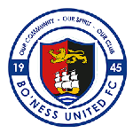
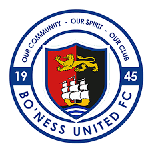
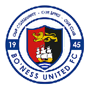
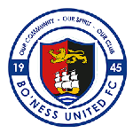
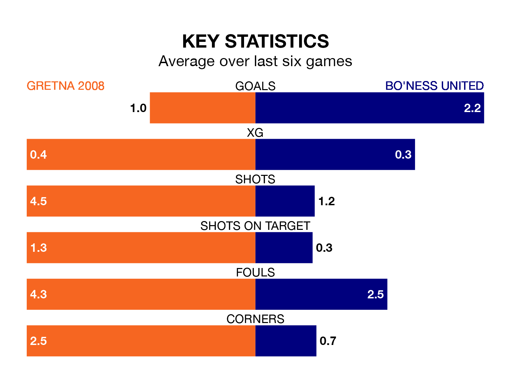

Gretna 2008 host Bo'ness United in Saturday's match at Raydale Park looking to bounce back from defeat last time out in Highland and Lowland Football Leagues.
Gretna 2008, who sit zero in the league after 18 games, fell to a 5-0 away defeat to Linlithgow Rose on December 9.
They face a Bo'ness side who also lost their last match, a 2-0 defeat to Tranent Juniors, and who sit eighth in the table.
With nine goals in 18 games so far this season, Gretna 2008 are the league's-17rd-lowest scorers with 0.5 goals per game. And they are conceding more than average, letting in 65 goals at a rate of 3.6 per game.
Bo'ness, meanwhile, are above average scorers, with 2.0 goals per game, compared to a league average of 1.7. They have conceded 1.5 goals per game.
The home team are in bad form in Highland and Lowland Football Leagues, with one win and five losses from their last six games.
With three wins and three losses over that period, United's form is much better – they have taken nine points from 18, compared to Gretna 2008's three.
Over the last year, Gretna 2008 and Bo'ness have played each other twice. Bo'ness won both of them.
Their last meeting was on August 5, when Bo'ness won 2-0 at home.
